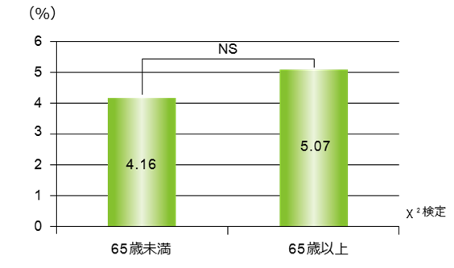

実臨床BIO-naïve患者における重篤感染症の発症率は、年齢別で差がなかった（FIRST-BIO Study）
- ●実臨床における生物学的製剤未使用のRA患者の安全性と有効性を評価
- ●1剤以上のcsDMARDsに効果不十分の生物学的製剤未使用患者839名を対象に、298施設でアクテムラ点滴静注（8mg/kg/4w（52週間））を投与されたRA患者の有効性と安全性を評価
【年齢別重篤感染症発生率】

重篤感染症の発生率は、
65歳未満4.16％、65歳以上5.07％であった
FIRST-BIO Studyでは、65歳以上・未満の患者で重篤感染症発現に差がなかった